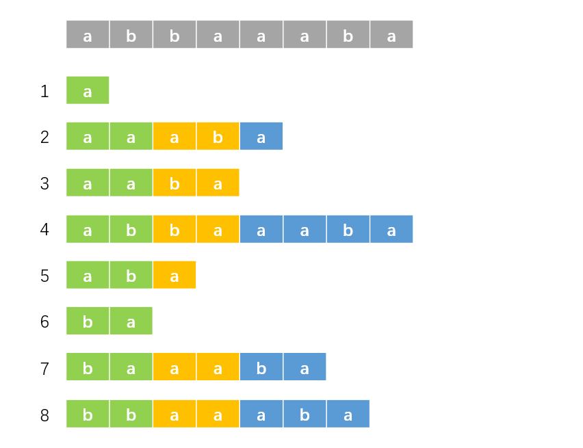

后缀数组
前言¶
后缀数组板子一遍过了，开心。
这篇学习笔记整体框架上与 OI-Wiki 相似，但保证本文章完全原创（定义部分除外）。
前置知识：基数排序、倍增。
记号与约定¶
字符串即为 \(s\)。
记 "后缀 \(i\)" 表示从 \(i\) 开始的后缀，即 \(s[i\dots n]\)，它代表后缀的编号。
记 \(sa[i]\) 表示排名为 \(i\) 的后缀的编号，\(rk[i]\) 表示后缀 \(i\) 的排名。显然有 \(sa[rk[i]] = rk[sa[i]] = i\)。
剩下的数组下文会说。
求法¶
\(O(n^2\log n)\) 做法¶
暴力对每个后缀进行排序，每次比较的复杂度为 \(O(n)\)，排序复杂度为 \(O(n\log n)\)，总复杂度 \(O(n^2\log n)\)。
\(O(n \log^2{n})\) 做法¶
对于字符串 \(s\) 的所有后缀，它们有大量重复部分，而直接排序就会进行大量重复比较，不如换个角度入手。
我们先从一组数据入手。对于 \(s = \texttt{abbaaaba}\)，我们先以每个后缀第一个字符为第一关键字，第二个字符为第二关键字进行排序，其实也就是对于每个后缀的前两个字符进行排序，结果如下：

根据上面的定义，绿色部分的排名即为 \(rk\) 数组。观察这些后缀，我们现在知道绿色部分的排名。而由后缀的性质，蓝色部分其实也是后缀，那么其实我们也知道下图中黄色部分的排名：

那么我们使用绿色部分的排名（即原排名，\(rk\) 数组）为第一关键字，黄色部分的排名（即对于后缀 \(i\)，第一个图中的蓝色部分是后缀 \(i + 2\)，那么黄色部分的排名即为后缀 \(i + 2\) 的原排名，即 \(rk[i + 2]\)）为第二关键字，进行排序，结果如下：

很好，现在绿色部分（已排序部分）的长度由 \(2\) 变为了 \(4\)。我们接下来再选取长度为 \(4\) 的黄色部分，这样，我们就成功对后缀的前 \(8\) 个字符排序了。以此类推，我们每次都倍增排序长度，并且重复以上操作，那么我们就可以在 \(O(n \log^2{n})\) 的复杂度内解决掉这个问题了（排序 \(O(n\log n)\)，倍增 \(O(\log n)\)）。
形式化的解法
设需要排序长度为 \(w\)。
对于后缀 \(i\)，我们知道按它的第 \(1\) 个字符到第 \(w/2\) 个字符排序的排名。对于后缀 \(i + w/2\) 也是如此，这相当于我们知道按后缀 \(i\) 的第 \(w/2 + 1\) 个字符到第 \(w\) 个字符排序的排名。那么我们以 \(rk[i]\) 为第一关键字，\(rk[i+w/2]\) 为第二关键字进行排序即可。
倍增 \(w\)，即 \(w \gets 2 \times w\)。
\(O(n \log{n})\) 做法¶
字符串有一个特点：值域小。也就是说每个位置的取值种类少。这样，我们就可以利用基数排序的思想。
具体地，先按第一个关键字扔进桶里，再按从大到小按第二关键字遍历桶即可。代码中的第二关键字进行了离散化，它代表第二关键字的排名。代码如下：
void f_sort() {
for (int i = 1; i <= m; i++) b[i] = 0;
for (int i = 1; i <= n; i++) b[rk[i]]++;
for (int i = 1; i <= m; i++) b[i] += b[i - 1];
for (int i = n; i >= 1; i--) sa[b[rk[tp[i]]]--] = tp[i];
}
可以看到，这样排序的复杂度是 \(O(n)\)。我们成功地将总复杂度优化为 \(O(n\log n)\)。
我们求出 \(sa\) 数组了之后，不能直接用 \(rk[sa[i]] = i\) 给 \(rk\) 赋值，这是因为有可能有些后缀的第一二关键字都相同，那么它们的排名也相同，这需要特判一下。
容易观察到第二关键字是由第一关键字平移得到，那么我们就可以 \(O(n)\) 求第二关键字。而且第二关键字我们只需要排名，可以进行一点小优化。具体实现见代码。
完整代码
#include <bits/stdc++.h>
using namespace std;
const int N = 1e6 + 10;
int n, m;
int sa[N], rk[N];
int b[N], tp[N];
char c[N];
void f_sort() {
for (int i = 1; i <= m; i++) b[i] = 0;
for (int i = 1; i <= n; i++) b[rk[i]]++;
for (int i = 1; i <= m; i++) b[i] += b[i - 1];
for (int i = n; i >= 1; i--) sa[b[rk[tp[i]]]--] = tp[i];
}
void g_sa() {
for (int i = 1; i <= n; i++) rk[i] = c[i], tp[i] = i;
f_sort();
int p = 0;
for (int w = 1; w <= n; w <<= 1) {
if (p >= n) break;
p = 0;
for (int i = n - w + 1; i <= n; i++) tp[++p] = i;
for (int i = 1; i <= n; i++) {
if (sa[i] > w) tp[++p] = sa[i] - w;
}
f_sort(), swap(rk, tp), rk[sa[1]] = p = 1;
for (int i = 2; i <= n; i++) {
int sl = sa[i - 1], sr = sa[i];
if (tp[sl] == tp[sr] && tp[sl + w] == tp[sr + w]) {
rk[sa[i]] = p;
} else rk[sa[i]] = ++p;
}
m = p;
}
}
int main() {
scanf("%s", c + 1);
n = strlen(c + 1), m = 127;
g_sa();
for (int i = 1; i <= n; i++) {
printf("%d ", sa[i]);
}
return 0;
}
拓展¶
这部分主要讲解 \(\text{Height}\) 数组，记为 \(ht[i]\)。
最长公共前缀¶
对于字符串 \(S\) 和 \(T\)，定义其最长公共前缀 \(\text{LCP}\) 为最大的 \(k(k \leq \min\{\lvert S \rvert,\lvert T \rvert\})\)，使得对于任意 \(i(1 \leq i \leq k)\)，有 \(S_i = T_i\)。
记 \(\text{lcp}(i, j)\) 为后缀 \(i\) 与后缀 \(j\) 的最长公共前缀。
\(\text{Height}\) 数组¶
有定义
其中 \(ht[1] = 0\)。
定义数组 \(H[i]\)，有 \(H[i] = ht[rk[i]]\)，即 \(ht[i] = H[sa[i]]\)，有如下引理
证明
若 \(H[i] = 0\)，引理显然成立，下面我们讨论 \(H[i] \geq 1\) 的情况。
首先，显然有 \(\text{lcp}(i+1,j+1) = \text{lcp}(i,j)-1\)（有 \(\text{lcp}(i,j) \geq 1\)），这相当于把两个后缀都往后移了一个字符，证明略。
设 \(sa[j] = i\)，\(sa[j - 1] = k\)，那么有
记 \(\text{suf}(i)\) 表示后缀 \(i\)，显然 \(\text{suf}(k) < \text{suf}(i)\)，那么容易知道 \(\text{suf}(k + 1) < \text{suf}(i + 1)\)。
记 \(p = rk[i+1]\)，那么有
则有
即
证毕。
注：证明中与 \(\text{lcp}(i,j)\) 和 \(\text{suf}(i)\) 有关的引理的证明在附录。即，本证明中“显然”的部分均在附录中给出详细说明。
求法¶
利用上面的引理，我们可以暴力地求出 \(ht\) 数组，代码如下：
void g_hei() {
int k = 0;
for (int i = 1; i <= n; i++) {
if (!rk[i]) continue;
if (k) k--;
while (c[i + k] == c[sa[rk[i] - 1] + k]) ++k;
ht[rk[i]] = k;
}
}
复杂度分析
\(k\) 代表的是 \(\text{LCP}\) 的长度，显然有 \(k \leq n\)。
显然，代码中 k-- 语句最多执行 \(n\) 次，那么 ++k 语句最多执行 \(2 \times n\) 次，这是因为如果多于 \(2 \times n\) 次，必然有一时刻 \(k\) 会大于 \(n\)。
这样，总复杂度为 \(O(n)\)。
应用¶
\(\text{Height}\) 数组应用十分广泛。
子串的最长公共前缀
有
这样，我们可以将原问题转化为 RMQ 问题，容易使用 ST 表或者线段树维护。
不同字串的数目
答案为
证明略。
更多 \(ht\) 数组的应用我们结合例题来分析。
例题¶
P3809 【模板】后缀排序¶
模板题。
P4051 [JSOI2007] 字符加密¶
题意
给你一个长度为 \(n\) 的字符串 \(S\)，你可以把它排成一圈，这样可以生成 \(n\) 个字符串。现在对这 \(n\) 个字符串进行排序，求排序后从小到大每个字符串的末尾组成的字符串。
环形似乎不好处理，但是我们有一种经典方法，将 \(S\) 拼接成 \(SS\)，再求后缀数组即可。